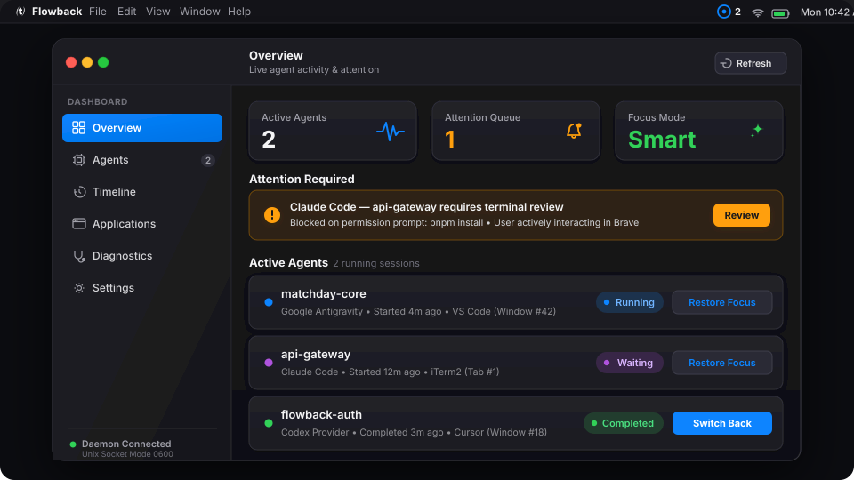

Your agents work.
Your context comes back.
A native macOS context and focus manager for AI coding agents. Track agent sessions across editors, terminals, and browsers—and intelligently decide when to return focus or notify you.

The Context-Switching Problem
AI coding agents take 2 to 10 minutes to run tests, generate code, or execute complex edits. What happens when they finish?
Without Flowback
Lost Context or Violent Focus Stealing:
- You switch to reading documentation or reviewing a PR, forget the agent is running, and lose 20 minutes of idle time.
- Or a naive script abruptly steals your focus while you are in the middle of typing a message on Slack, swallowing keystrokes.
- If multiple agents finish at once, your desktop frantically jumps between spaces in an avalanche of window thrashing.
With Flowback
Intent-Aware Focus & Context Memory:
- Flowback remembers the exact origin window ID, workspace directory, process ID, and application bundle.
- If you are idle (> 5s), it smoothly returns you to the exact origin window (e.g.
VS Code → matchday). - If you are actively typing, it suppresses window raising and delivers an actionable macOS notification instead.
- Multiple completions are aggregated into a single digest with a 1000ms focus cooldown.
Engineered for Deep Work
Designed from the ground up for developers working on mission-critical codebases.
Exact Window ID Restoration
Section 14 restoration hierarchy locates the precise numeric window ID via Accessibility, matching directory titles if windows reload.
User Intent Engine
Senses system idle time via CGEventSource. Never steals focus if you pressed a key or clicked a mouse in another app within 5 seconds.
Attention Arbiter
Priority ordering (permissionRequired > failure > completed > waiting). 1000ms cooldown eliminates window thrashing.
Focus Lock Mode
Temporarily silence all auto-restoration for 15m, 30m, 45m, 1h, or indefinite while keeping actionable notifications intact.
Native Swift 6 & SQLite WAL
100% native AppKit and SwiftUI. Local persistence in ~/.flowback/flowback.sqlite. Zero web servers, zero Electron bloat.
Local-First & Zero Telemetry
No outbound network calls, no analytics, no prompt inspection, no code extraction. Your workspace privacy is mathematically preserved.
Decoupled Architecture
Agent providers never manipulate focus directly. All operations strictly flow through the event bus and attention arbiter.
Agent Integrations & Status
First-class integrations for major coding assistants and an extensible Generic JSON Hook Protocol.
| Agent / Ecosystem | Status | Integration Mechanism | Capabilities |
|---|---|---|---|
| Google Antigravity | Supported | Hooks (~/.gemini/config/hooks.json) + Transcript Scanning |
PreInvocation, PostInvocation, Stop with fullyIdle=true priority translation |
| Claude Code | Supported | Process & Terminal Hook Monitoring | Captures terminal context, detects completion and user permission states |
| OpenAI Codex | Supported | Process & CLI IPC Translation | Maps CLI states into normalized events |
| Antigravity CLI & Aider | Supported | CLI Wrapper & Git / Terminal Hooks | Translates exit codes and tool execution signals |
| Generic Hook Protocol | Supported | POSIX Unix Domain Socket (~/.flowback/flowback.sock) |
Emits schema version 1 events from any script or CI runner |
| Windsurf | Supported | Official Cascade Hooks | Native JSON lifecycle hooks (~/.codeium/windsurf/hooks.json), transcript fallback, exact window restoration |
| OpenCode | Supported | Official Plugin API | Plugin event subscriptions (session.*, tool.execute.*) over local authenticated socket IPC |
| Cursor Background Agent | Supported | Cloud Agents API & Window Adapter | Remote api.cursor.com/v1/agents lifecycle tracking, subagents, repo/branch metadata, and local window restoration |
Frequently Asked Questions
Everything you need to know about Flowback's focus coordination.
Simple scripts have no context memory and blindly steal focus even while you are typing an email. Flowback remembers the exact numeric window ID, measures system idle duration, suppresses focus theft if you are typing, and aggregates multiple simultaneous agent events.
No. Flowback operates completely offline. It opens zero network sockets, makes zero telemetry requests, and stores only structural window metadata locally in SQLite at ~/.flowback/flowback.sqlite.
macOS requires Accessibility (AXUIElement) to query window titles and raise specific background windows. Without it, Flowback falls back to application-level switching via NSWorkspace.
macOS 14.0 (Sonoma) and macOS 15.0 (Sequoia) or newer on both Apple Silicon (M1/M2/M3/M4) and Intel x86_64.
Reclaim Your Focus Today
Download Flowback for macOS and let your agents work while your context stays protected.